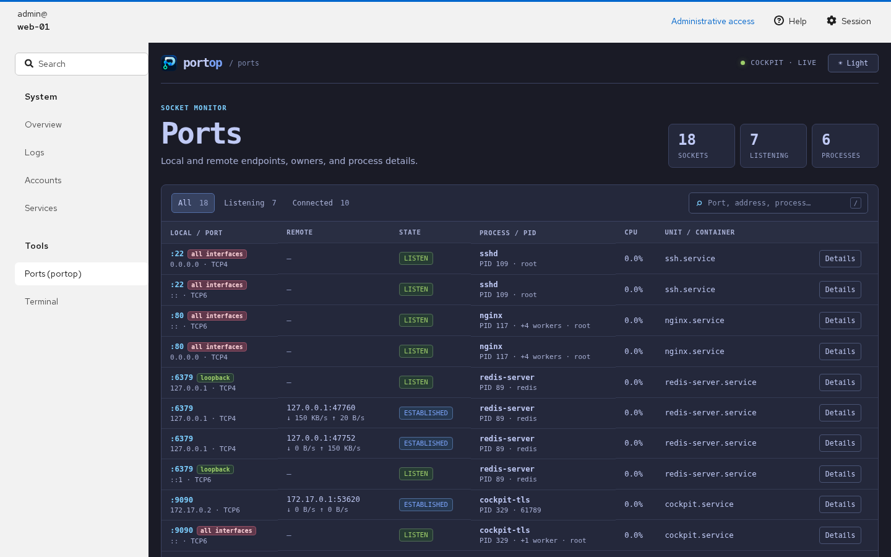

Cockpit add-on
The dashboard inside Cockpit, using its login and your permissions. Linux only.
Install
The .deb and .rpm packages (and the APT repository) install the page under /usr/share/cockpit/portop, so it is ready as soon as portop is. Open Tools → Ports (portop).
With any other install method (Snap, Homebrew, go install, a release archive), copy the page from the source tree. For every user:
git clone https://github.com/padovanl/portop.git sudo cp -r portop/cockpit/portop /usr/share/cockpit/portop
or only for yourself, without root:
git clone https://github.com/padovanl/portop.git mkdir -p ~/.local/share/cockpit cp -r portop/cockpit/portop ~/.local/share/cockpit/portop
The page calls portop --json, --inspect-pid and --signal-pid through Cockpit's bridge, so portop must be on the host's PATH and there is no extra service to expose.
Using the page
The table refreshes every two seconds, with the same tabs and filter as the web dashboard. Established connections show their traffic rate under the remote address, worked out from the byte counts of two refreshes in a row (see Traffic). Details shows the socket and the owning process; Terminate and Force kill send SIGTERM or SIGKILL after a confirmation, and only if the process still has the start time portop read, so a reused PID is never signaled.

Administrative access
The page runs portop as root when Cockpit's Administrative access is on, and as your own user when it is off. Without it, ports owned by other users show no process, and Terminate and Force kill are unavailable, as with portop without sudo. The page refreshes every two seconds and picks up a change of the switch on its own.